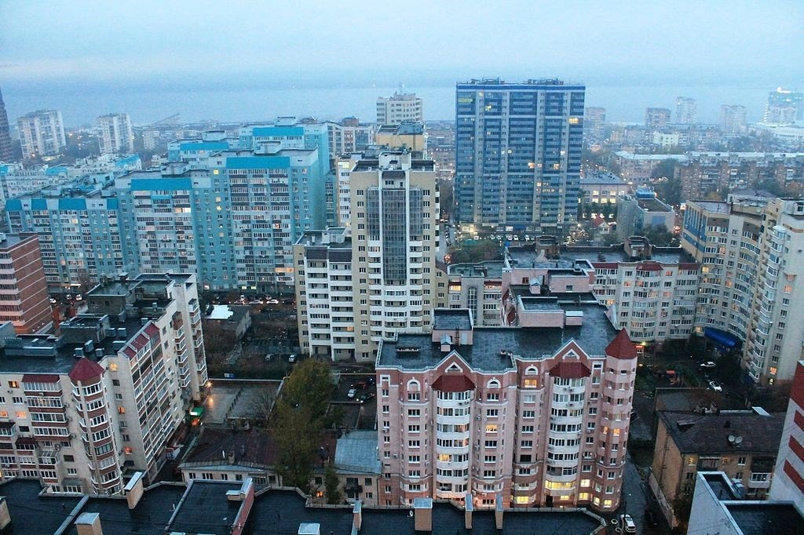
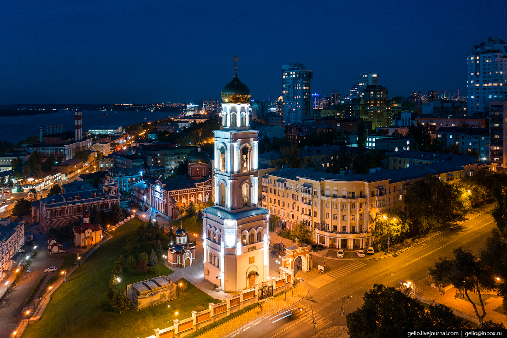
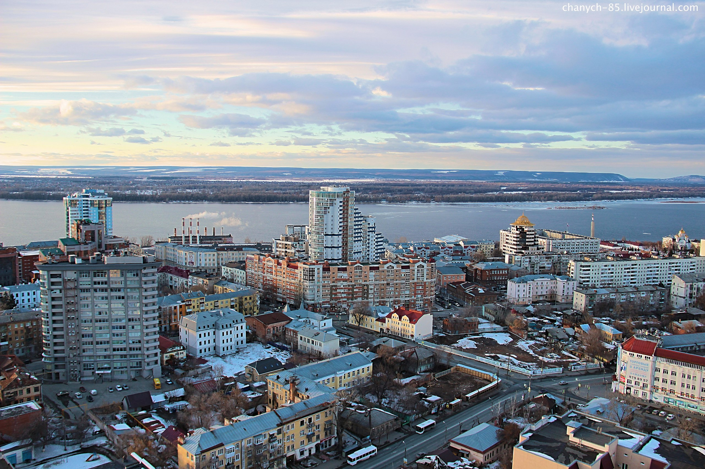

Самара - город в России, расположенный на левом берегу Волги. Это крупный экономический, транспортный, научно-образовательный и культурный центр страны. Самара была основана в 1586 году как крепость для защиты границ государства от набегов кочевников. В течение своей истории город несколько раз менял свое название: сначала он назывался Самара, затем с 1935 по 1991 год - Куйбышев, а после этого вновь вернул себе историческое название.  Сегодня Самара является одним из крупнейших городов России с населением более 1,1 миллиона человек. Город известен своими красивыми парками и скверами, архитектурными памятниками и музеями. Здесь находятся такие достопримечательности, как Жигулевский пивоваренный завод, бункер Сталина, музей “Самара Космическая” и многие другие. Экономика Самары базируется на промышленности, торговле и услугах. В городе расположены крупные предприятия, такие как “АвтоВАЗ”, “Самарский металлургический завод”, “КуйбышевАзот” и другие. Также в Самаре активно развивается туризм, благодаря чему город привлекает множество туристов со всего мира. В Самаре есть несколько крупных университетов, в том числе Самарский национальный исследовательский университет имени академика С.П. Королева, Поволжский государственный университет телекоммуникаций и информатики и другие. Город также является важным транспортным узлом,  здесь находится международный аэропорт “Курумоч” и железнодорожный вокзал “Самара”. В целом, Самара - это красивый и интересный город с богатой историей и культурой, который стоит посетить. Самара – один из крупнейших городов РФ, расположенный в Среднем Поволжье на левом возвышенном берегу реки Волги. На территории города находятся Жигулёвский государственный природный биосферный заповедник имени И.И. Спрыгина и Национальный парк «Самарская Лука», которые в совокупности занимают около 30% площади городского округа. Официальной датой основания города считается 1586 год, однако поселения на территории современного города существовали задолго до этой даты. Во времена правления Екатерины II был разработан генеральный план развития города, который получил название «регулярная застройка». В это время в городе активно строятся каменные дома и церкви, а также прокладываются новые улицы. Современный период истории Самары начинается с 1917 года, когда город становится одним из центров революционных событий. В 1928 году Самара становится центром Средневолжской области, а затем и Куйбышевского края. С началом Великой Отечественной войны в город были эвакуированы промышленные предприятия и научные учреждения. Начиная с 1950-х годов, в городе активно развивается промышленность, наука и образование. В этот период в Самаре строятся новые жилые районы, образовательные учреждения и научные центры. Самара - это город в России, расположенный на левом берегу Волги. Население города составляет более 1,1 миллиона человек. Самара была основана в 1586 году как крепость и имеет богатую историю. Город является важным транспортным узлом, здесь находится международный аэропорт Курумоч и железнодорожный вокзал. В Самаре также есть множество достопримечательностей, включая Жигулевский пивоваренный завод, музей “Самара Космическая” и Самарский театр оперы и балета. Климат в Самаре континентальный, с холодной зимой и теплым летом.  Средняя температура зимой составляет около -10 градусов Цельсия, а летом - около +25 градусов Цельсия. Экономика Самары базируется на промышленности, торговле и услугах. Основные отрасли промышленности включают автомобилестроение, авиакосмическую промышленность, нефтехимию и пищевую промышленность. Самара также известна своими культурными мероприятиями, такими как фестиваль “Рок над Волгой” и международный кинофестиваль “Кино-Самара”. В целом, Самара - это интересный город с богатой историей, разнообразной культурой и красивой природой. Одна из главных фишек Самары, о которой обычно не подозревают туристы — огромный исторический центр. Тысячи деревянных домиков с резными наличниками соседствуют с модерновыми особняками с маскаронами, с вкраплением советского авангарда и необычных по форме зданий эпохи модернизма. Культурная жизнь сконцентрирована в старом городе: музеи, арт-кластеры, галереи и кафе. Поэтому туристы обычно за пределы центра не выбираются. И зря: метро за 15 минут переносит из центра в спальные окраины. Район Безымянка комплексно застраивали «дворцами для рабочих заводов» в сталинскую эпоху. Дома богато украшены лепным декором, огромными арками, коваными балконами и колоннами. Поэтому в этом районе для удобства появилось метро. А почти через дорогу — модернистский квартал «Авиа», застроенный по индивидуальному проекту. Его возвели для рабочих ракетно-космического центра «Прогресс». Безымянка — важный район для Самары, со своей мифологией и индивидуальностью — легендами про советских гопников в больших фуражках и огромными рынками. За те же 15 минут с речного вокзала в историческом центре маленький теплоход перевозит в другой мир — на другой берег Волги. Там находятся национальный парк «Самарская Лука» с историческими селами, густыми лесами и Жигулевские горы. Местные называют эту территорию просто «Заволга».